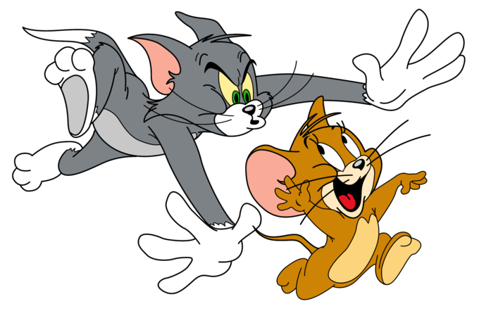
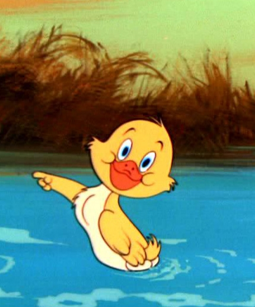

-
Despre
Tom și Jerry este o serie desene animate, care prezintă o pereche de dușmani, o pisică de casă și un șoricel, creată de William Hanna și Joseph Barbera pentru studiourile Metro-Goldwyn-Mayer. Timp de 17 ani, cuplul de animatori a lucrat aproape numai la Tom și Jerry, regizând mai mult de 114 scurt metraje, care se bazau mai mult pe mișcare în dauna dialogului. În anul 1957 MGM a decis să închidă studioul de animație din cauza nerentabilității (un serial de șapte minute cu Tom și Jerry costa 35.000 de dolari), și să le redifuzeze pe cele deja existente.
În 1960 MGM semnează un contract cu studioul cehoslovac Rembrandt Films în urma căruia s-au produs 13 scurt-metraje cu cele două personaje, regizate de Gene Deitch. Desenele erau considerate neobișnuite și, în multe feluri bizare. Deoarece fiecare desen avea doar un buget de 10.000 de dolari, s-a trecut la animația limitată, Gene Deitch fiind nevoi să redeseneze personajele cu mai puține detalii și bolnăviciose iar deseori apărea efectul de motion blur. În 1963 MGM cere studioului Sib Tower 12 să creeze alte 34 de scurt metraje, de data aceasta regizate de Chuck Jones. Mami doi Pantofi este înlocuită de un bărbat alb care îl pedepsește în mod repetat pe Tom, bătându-l cu grătarul și turnându-i pe gât o sticlă întreagă de băutără carbogazoasă.
Începând cu anul 1965, desenele au fost cenzurate de Chuck Jones la cererea MGM, fiind scoase scenele care făceau referiri rasiale asupra negrilor (Mami doi Pantofi fiind înlocuită în mai multe dintre desene cu o femeie albă), chinezilor și indienilor.
-
Personaje
 Tom și Jerry Tom este anti-eroul înfometat, motanul șmecher și ursuz care nu are decât o dorință, să îl mănânce pe Jerry. Tom încearcă toate șmecheriile posibile pentru a pune mâna pe șoarecele acela, dar nu reușește decât să facă praf casa. În numeroase episoade Tom Motanul încearcă să-l captureze pe Jerry Șoarecele colocatarul său nedorit, creând haos și dezastru. O fi Jerry mic, dar este suficient de inteligent pentru a întoarce lucrurile în favoarea lui când Tom și-o caută cu lumânarea. În perechea Tom și Jerry, șoricelul este șeful. În anumite episoade Tom încearcă sa mănânce păsări, pești sau alți șoareci, însă niciodată pe Jerry sau pe Tuffy. Unele dintre motivele care duc la război sunt: sabotarea planurilor lui Tom de către abilul său inamic, consumarea alimentelor de către Jerry pe care Tom ar fi trebuit să le păzească, răzbunarea, un motan rival, o femelă sau doar din plăcerea unuia dintre cei doi inamici. Tom reușește rar să-l prindă pe Jerry, doar atunci când șoricelul ajută alte victime ale lui Tom. Destul de interesant, la începutul episoadelor din "era Hanna-Barbera" lângă titlu apar chipurile lui Tom și a lui Jerry zâmbind unul la altul, ceea ce este destul de ciudat având în vedere că cei doi sunt inamici. Există, de asemenea mai multe cazuri în care aceștia prezintă sentimente de prietenie unul pentru altul ca de exemplu în episodul "Thomas îndrăgostit" sau în episodul "Jerry și leul" când Jerry se preface că este rănit, iar Tom aduce trusa de prim-ajutor pentru a-l ajuta pe Jerry. .png)
Spike și Tyke Durul absolut din desenele Tom și Jerry, Spike, este buldogul din vecini căruia îi place să se relaxeze în cușcă și să roadă un os. Fiind prieten cu Jerry, Spike intervine în favoarea lui atunci când Tom îi deranjează liniștea mult iubită. Tom și Jerry știu să nu îl deranjeze pe buldogul cel mare Spike și mai ales să nu îl deranjeze pe fiul său cel blând, Tyke. Spre deosebire de Tom și Jerry, Tyke nu caută să facă probleme, dar mereu se ajunge la asta. Și de obicei problemele pică pe Tom! Spre deosebire de tatăl lui, Tyke nu vorbește. El comunică numai prin scheunat, mârâit, expresii faciale și dând din coadă.  Rățușca Este un personaj episodic, apare ca fiind un prieten de nădejde a lui Jerry, dar foarte buclucaș și care intră în necazuri cu Tom. -
Galerie Foto
poza 1
poza 2 poza 3